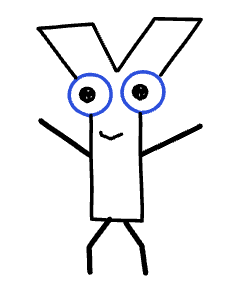

Neste problema deverá submeter uma classe ED254 contendo um programa completo para resolver o problema (ou seja, com o método main).

A sua tarefa é desenhar a letra Y, constituída unicamente pelos caracteres '.' e '#'. O Y é determinado por um número ímpar T indicando o seu tamanho (altura e largura em número de caracteres). Por exemplo, uma letra Y de tamanho T=5 corresponde à seguinte figura:#...# -> somente dois '#' nos extremos da 1ª linha de tamanho T .#.#. -> '#' a uma posição dos extremos ..#.. -> um único '#' no centro desta linha do meio e em todas as seguintes ..#.. ..#..
Na primeira linha do input vem um número N indicando a quantidade de letras Y a desenhar (1 ≤ N ≤ 10).
Cada uma das N linhas seguintes contém número ímpar Ti (3 ≤ N ≤ 99) indicando o tamanho da letra Y a desenhar.
O output deve conter N letras Y (e pela mesma ordem em que os tamanhos aparecem no input). Cada letra deve se representada um quadrado de Ti por Ti caracteres, onde a letra é desenhada como atrás explicada. Veja o exemplo de input para garantir que percebe o pedido.
| Input | Output | Explicação |
|---|---|---|
4 5 7 3 9 |
#...# .#.#. ..#.. ..#.. ..#.. #.....# .#...#. ..#.#.. ...#... ...#... ...#... ...#... #.# .#. .#. #.......# .#.....#. ..#...#.. ...#.#... ....#.... ....#.... ....#.... ....#.... ....#.... |
As primeiras 5 linhas são uma letra Y de tamanho 5. As 7 linhas seguintes são uma letra Y de tamanho 7. As 3 linhas seguintes são uma letra Y de tamanho 3. As 9 linhas seguintes são uma letra Y de tamanho 9. |
Teste Prático de Estruturas de Dados (CC1007)
Conteúdo de Fernando Silva (DCC/FCUP), migrado de dcc.fc.up.pt/~fds/aulas/EDados/2526/praticas/problems/prob254.html.